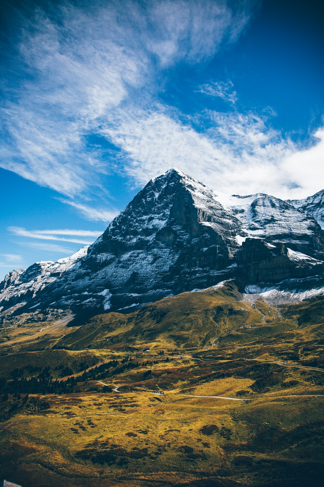

Mountains

An overview
They define landscapes, people risk their lives to climb them, and they can even make their own weather.The mighty chunks rise all over the world, including the oceans. They usually have steep, sloping sides and sharp or rounded ridges, and a high point, called a peak or summit. Most geologists classify a mountain as a landform that rises at least 1,000 feet (300 meters) or more above its surrounding area. A mountain range is a series or chain of mountains that are close together.
How are they formed??
The world's tallest mountain ranges form when pieces of Earth's crust—called plates—smash against each other in a process called plate tectonics , and buckle up like the hood of a car in a head-on collision. The Himalaya in Asia formed from one such massive wreck that started about 55 million years ago. Thirty of the world’s highest mountains are in the Himalaya. The summit of Mount Everest, at 29,035 feet (8,850 meters), is the highest point on Earth.
The tallest mountain measured from top to bottom is Mauna Kea, an inactive volcano on the island of Hawaii in the Pacific Ocean. Measured from the base, Mauna Kea stands 33,474 feet (10,203 meters) tall, though it only rises 13,796 feet (4,205 meters) above the sea.
Volcanic mountains form when molten rock from deep inside the Earth erupts through the crust and piles up on itself. The islands of Hawaii were formed by undersea volcanoes, and the islands seen above water today are the remaining volcano tops. Well-known volcanoes on land include Mount St. Helens in Washington State and Mount Fuji in Japan. Sometimes volcanic eruptions break down mountains instead of building them up, like the 1980 eruption that blew the top off Mount St. Helens.
When magma pushes the crust up but hardens before erupting onto the surface, it forms so-called dome mountains. Wind and rain pummel the domes, sculpting peaks and valleys. Examples include the Black Hills of South Dakota and the Adirondack Mountains of New York. Plateau mountains are similar to dome mountains, but form as colliding tectonic plates push up the land without folding or faulting. They are then shaped by weathering and erosion.
Other types of mountains form when stresses within and between the tectonic plates lead to cracking and faulting of the Earth's surface, which forces blocks of rock up and down. Examples of fault-block mountains include the Sierra Nevada in California and Nevada, the Tetons in Wyoming, and the Harz Mountains in Germany.
Impact of Mountains on Habitats and Geopolitics
Mountains often serve as geographic features that define natural borders of countries. Their height can influence weather patterns, stalling storms that roll off the oceans and squeezing water from the clouds. The other side is often much drier. The rugged landscapes even provide refuge—and protection—for fleeing and invading armies

About
wikipedia